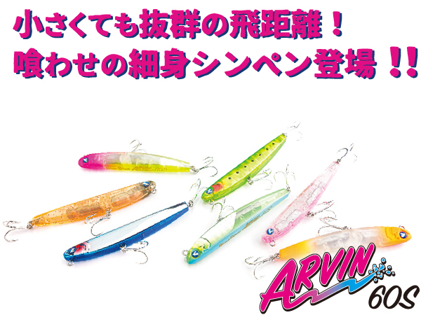
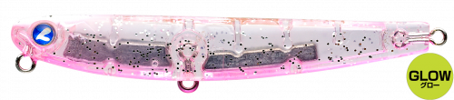
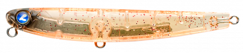
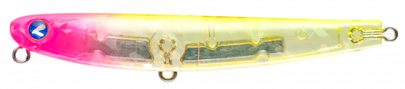
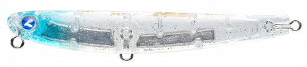
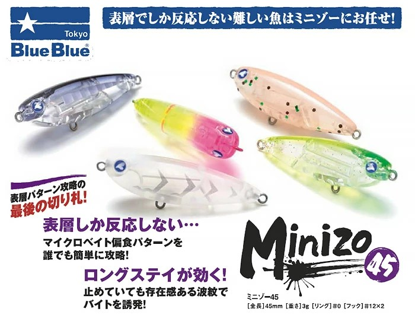
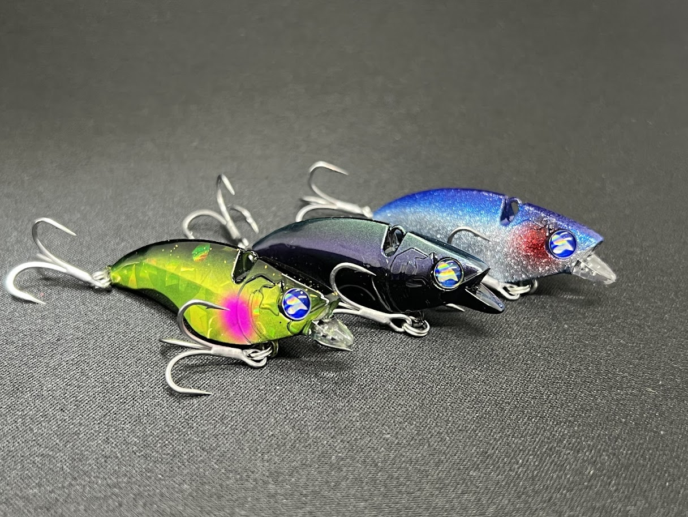

アービン60S
（ARVIN 60S）
アービン60S（ARVIN 60S）はBlueBlue（ブルーブルー）の表層スナイパー系シンキングペンシルです。
先に発売されたアービン150Sの飛距離と急浮上特性を受け継ぎ、PE0.3〜0.6号クラスのライトゲーム用にリサイズ。フロートリグでしか届かなかった遠いポイントに、プラグで届くのが最大の魅力です。

画像出典:BlueBlue公式HP
スペック
- メーカー
- BlueBlue（ブルーブルー）
- タイプ
- シンキングペンシル
- 全長
- 60mm
- 自重
- 6.5g
- フック
- #12×2
- リング
- #0
- 推奨ライン
- PE0.3〜0.6号
- ターゲット
- メバル・アジ・カマス・メッキ・シーバス
- 価格
- 1,430円（税込）
▼今すぐチェック

アービン60Sの特徴
遠くの水面（シャロー）を静かに撃ち抜く、ライトゲーム用の遠距離シンキングペンシル
-
フロートリグ並みに届く飛距離と、巻くだけで急浮上する特性
6.5gのプラグながら抜群の飛距離を持ち、竿を立てて巻くだけで水面直下に急浮上する。どんなに遠くても水面に近いレンジをゆっくり引けるので、沖の表層に浮く群れをプラグで狙える。
-
「クルクルイワシ」を再現する弱々しいロール＆フラッシング
ボディの振り幅を抑えたロール＆フラッシング主体のアクションで、水面にI字に近いV字の引き波を立てながら泳ぐ。見切られにくい細身のシルエットと「極限の弱さ」で、群れを散らさずに1匹ずつ釣っていけるのが強み。
-
シミーフォールとロッドワークへの反応
フォールはバックスライド気味のシミーフォール。固定ウエイトの低重心とフラットサイド＆フラットボトム形状で、シェイキングリトリーブでの水中ドッグウォークや、トゥイッチでのヒラヒラとした首振りアクションも出せる。
アービン60Sの使い方
基本は着水後すぐに巻き出し、I字に近い引き波を出しながらのロール＆フラッシングで探る使い方。群れが散りにくく、サーチベイトとしてテンポ良く広範囲を探れます。
反応がない時は、少し沈めてからシミーフォールで見せ、巻き出し直後の急浮上の軌道変化でリアクションバイトを誘うのが効果的。ここぞという場面では、竿先を揺らしながら巻くシェイキングリトリーブやトゥイッチを入れて、首振りのアピールを加えてみましょう。
アービン60Sの得意な状況
堤防・地磯・河川・サーフなど、シャローのライトゲーム全般が出番。
これまでフロートリグ頼りだった広いシャローのメバルゲームや、重めのジグヘッド・メタルジグで狙っていた回遊系のアジングで特に効果を発揮します。カマスやメッキなどの小型青物、シーバス、ハタ類、マダイ、クロダイなど、様々なフィッシュイーターにも対応できる1本です。
ワンポイント
巻き感がほどよく繊細なので、リトリーブ中の潮ヨレなどの変化を感じ取りやすいのもアービン60Sの長所。
巻いていて抵抗が変わる場所があれば、そこが魚の付きやすいポイントです。同じコースを丁寧に通して反応を探ってみましょう。
人気カラー
アービン60Sは#01〜#14の14色に加えて、UV系などのカラーも展開。ライトゲームでオススメのカラーを厳選して紹介します。

#02 モモイログローグロー入りのピンク系。夜のメバリングや常夜灯周りのアジングに。

#03 オキアミアミパターンに合わせやすいナチュラル系。スレた群れにも。

#08 ピンクチャートクリアクリアボディにピンク×チャートのアクセント。澄み潮での食わせとアピールを両立。

#11 キラキラシラスシラスなど小型ベイトを意識したフラッシング重視のカラー。日中やマズメに。
画像出典:BlueBlue公式HP
アービン60Sに似ているルアー
-

ミニゾー45 ブルーブルー 詳細はこちら＞全長45mm・自重3gのフローティングペンシル。水面直下（0〜10cm）を攻めるライトゲーム用プラグで、表層の魚をプラグで狙うという考え方がアービン60Sと共通する。
-
 イネムン60
ブルーブルー
詳細はこちら＞
イネムン60
ブルーブルー
詳細はこちら＞
全長60mm・自重6gのトップウォータープラグ。同じブルーブルーのライトゲーム用60mmクラスで、水面系の釣りでアービン60Sと使い分けたい1本。
-

ナレージ50 ブルーブルー 詳細はこちら＞全長50mm・自重12gのバイブレーション。リトリーブ速度で全レンジを探れるので、表層のアービン60Sで反応がない時に下のレンジを探るのに向いている。